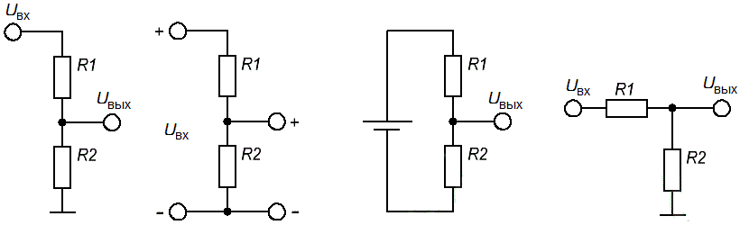
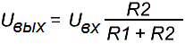
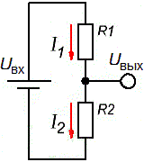
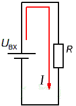
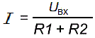
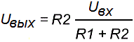

Расчет делителя напряжения на резисторах
Делитель напряжения - это простая схема, которая позволяет получить из высокого напряжения пониженное напряжение. Используя только два резистора и входное напряжение, мы можем создать выходное напряжение, составляющее определенную часть от входного.
Схема делителя напряжения на резисторах
Схема делителя напряжения включает в себя входной источник напряжения и два резистора (рис. 1).

Рис. 1 - Варианты изображения делителя напряжения на схемах
Обозначим резистор, который находится ближе к плюсу входного напряжения (Uвх) как R1, а резистор находящийся ближе к минусу как R2. Падение напряжения (Uвых) на резисторе R2 - это пониженное напряжение, полученное в результате применения резисторного делителя напряжения.
Расчет делителя напряжения предполагает, что нам известно, по крайней мере, три величины из приведенной выше схемы: входное напряжение и сопротивление обоих резисторов. Зная эти величины, мы можем рассчитать выходное напряжение.

На основании известных значений Uвх, R1 и R2 выведем формулу для Uвых исходя из закона Ома. Обозначим через I1 и I2, токи которые протекают через резисторы R1 и R2 соответственно (рис. 2).

Рис. 2 - Сила тока в делителе
Выходное напряжение Uвых будет равно:
Uвых=I2·R2
Так как резисторы R1 и R2 соединены последовательно, то
I1 = I2.
Uвх - это напряжение, которое прикладывается резисторам R1 и R2. Эти резисторы соединены последовательно. При этом их сопротивления суммируются:
R=R1+R2
Заменив R1 и R2 эквивалентным резистором R получим упрощенную схему (рис. 3).

Рис. 3 - Упрощенная схема
Формула Закон Ома может быть записана в следующем виде:

Так как I1 = I2=I, то:

Это уравнение показывает, что выходное напряжение прямо пропорционально входному напряжению и отношению сопротивлений R1 и R2.
Источники
joyta.ru - Делитель напряжения на резисторах. Формула расчета, онлайн калькулятор